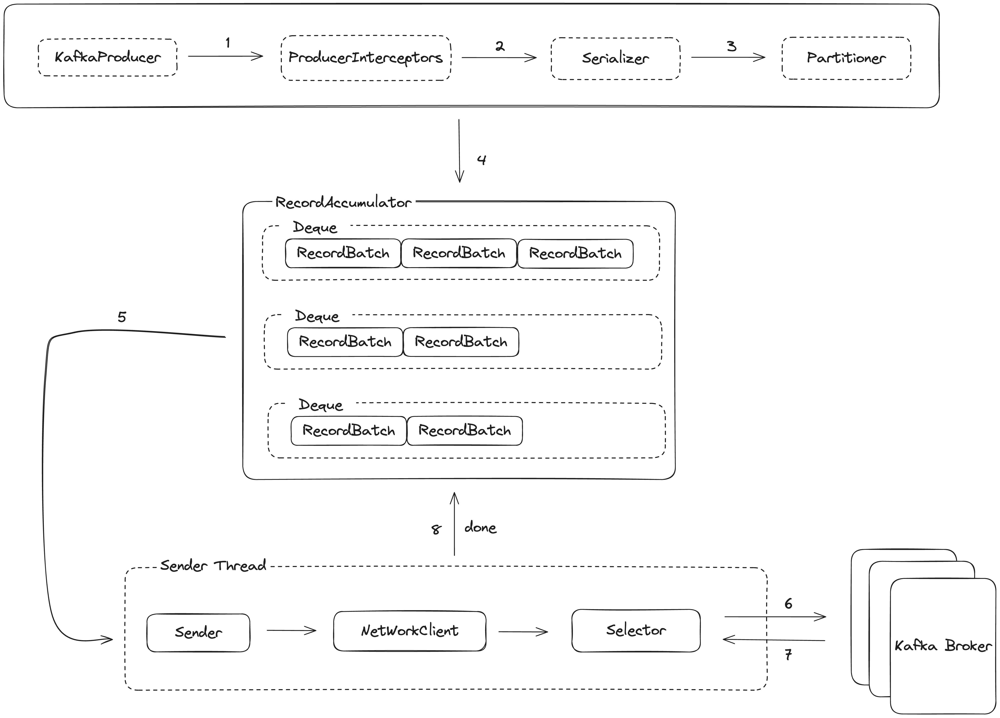
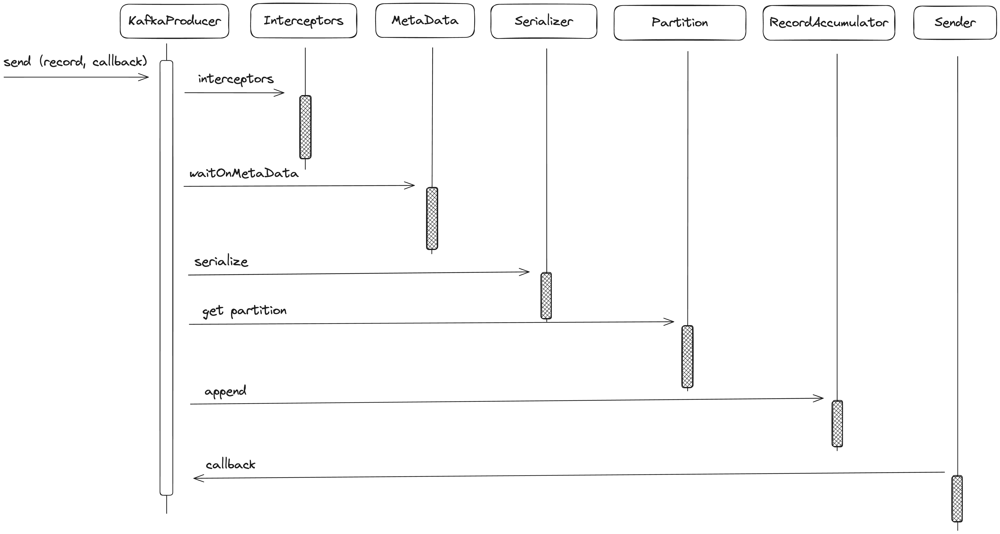
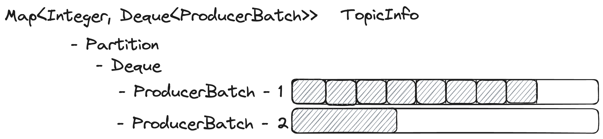
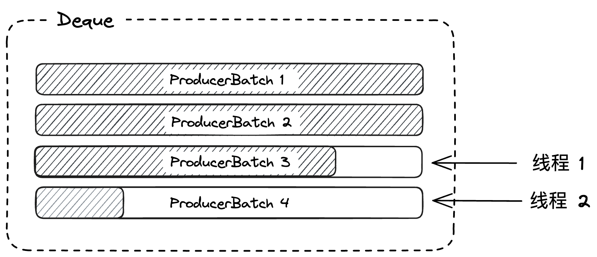

如今在维护各个微服务下
-
Producer
生产者客户端通过调用send方法,将消息发送到Topic所在的Broker

KafkaProducer构造函数中
KafkaProducer(ProducerConfig config,
Serializer<K> keySerializer,
Serializer<V> valueSerializer,
ProducerMetadata metadata,
KafkaClient kafkaClient,
ProducerInterceptors<K, V> interceptors,
Time time) {
try {
this.partitioner = config.getConfiguredInstance(...);
this.keySerializer = config.getConfiguredInstance(...);
this.valueSerializer = config.getConfiguredInstance(...);
List<ProducerInterceptor<K, V>> interceptorList = ClientUtils.createConfiguredInterceptors(...)
this.interceptors = new ProducerInterceptors<>(interceptorList);
this.accumulator = new RecordAccumulator(...);
this.metadata = new ProducerMetadata(...}
this.sender = newSender(logContext, kafkaClient, this.metadata);
this.ioThread = new KafkaThread(ioThreadName, this.sender, true);
this.ioThread.start();
}
我们来看看KafkaProducer的send(record,callback)方法的整体调用流程

private Future<RecordMetadata> doSend(ProducerRecord<K, V> record, Callback callback) {
// Append callback takes care of the following:
// - call interceptors and user callback on completion
// - remember partition that is calculated in RecordAccumulator.append
AppendCallbacks appendCallbacks = new AppendCallbacks(callback, this.interceptors, record);
try {
throwIfProducerClosed();
// first make sure the metadata for the topic is available
long nowMs = time.milliseconds();
ClusterAndWaitTime clusterAndWaitTime;
try {
clusterAndWaitTime = waitOnMetadata(record.topic(), record.partition(), nowMs, maxBlockTimeMs);
} catch (KafkaException e) {
...
}
nowMs += clusterAndWaitTime.waitedOnMetadataMs;
long remainingWaitMs = Math.max(0, maxBlockTimeMs - clusterAndWaitTime.waitedOnMetadataMs);
Cluster cluster = clusterAndWaitTime.cluster;
byte[] serializedKey;
try {
serializedKey = keySerializer.serialize(record.topic(), record.headers(), record.key());
} catch (ClassCastException cce) {
...
}
byte[] serializedValue;
try {
serializedValue = valueSerializer.serialize(record.topic(), record.headers(), record.value());
} catch (ClassCastException cce) {
...
}
// Try to calculate partition, but note that after this call it can be RecordMetadata.UNKNOWN_PARTITION,
// which means that the RecordAccumulator would pick a partition using built-in logic (which may
// take into account broker load, the amount of data produced to each partition, etc.).
int partition = partition(record, serializedKey, serializedValue, cluster);
// Append the record to the accumulator. Note, that the actual partition may be
// calculated there and can be accessed via appendCallbacks.topicPartition.
RecordAccumulator.RecordAppendResult result = accumulator.append(record.topic(), partition, timestamp, serializedKey,
serializedValue, headers, appendCallbacks, remainingWaitMs, abortOnNewBatch, nowMs, cluster);
assert appendCallbacks.getPartition() != RecordMetadata.UNKNOWN_PARTITION;
if (result.batchIsFull || result.newBatchCreated) {
log.trace("Waking up the sender since topic {} partition {} is either full or getting a new batch", record.topic(), appendCallbacks.getPartition());
this.sender.wakeup();
}
return result.future;
// handling exceptions and record the errors;
// for API exceptions return them in the future,
// for other exceptions throw directly
}
}
-
MetaData
每个Topic中有多个分区
在KafkaProducer中用来维护MetaData的对象是ProducerMetadataMap<String, Long> topics = new HashMap<>();这个topicsMap,并且封装了MetaData对象
MetaData
- MetadataCache cache
- Map<Integer, Node> nodes;
- Node controller;
- Map<TopicPartition, PartitionMetadata> metadataByPartition;
- Cluster clusterInstance;
- Long metadataExpireMs
PartitionMetadata包含Leader副本的详细信息
-
其中封装了MetaData对象
， ： MetaData - MetadataCache cache - Map<Integer, Node> nodes; - Node controller; - Map<TopicPartition, PartitionMetadata> metadataByPartition; // immutable clone for client read, from metadataByPartition - Cluster clusterInstance; // interval time of flush - long metadataExpireMs; - long lastRefreshMs; - long lastSuccessfulRefreshMs;其中PartitionMetadata包含的Leader副本的详细信息
PartitionMetadata - TopicPartition topicPartition; - Optional<Integer> leaderId - Optional<Integer> leaderEpoch; - List<Integer> replicaIds; - List<Integer> inSyncReplicaIds; - List<Integer> offlineReplicaIds;MetaData的更新策略
： private ClusterAndWaitTime waitOnMetadata(String topic, Integer partition, long nowMs, long maxWaitMs) throws InterruptedException { // add topic to metadata topic list if it is not there already and reset expiry Cluster cluster = metadata.fetch(); if (cluster.invalidTopics().contains(topic)) throw new InvalidTopicException(topic); metadata.add(topic, nowMs); Integer partitionsCount =cluster.partitionCountForTopic(topic); // Return cached metadata if we have it, and if the record's partition is either undefined // or within the known partition range if (partitionsCount != null && (partition == null || partition < partitionsCount)) return new ClusterAndWaitTime(cluster, 0); long remainingWaitMs = maxWaitMs; long elapsed = 0; // Issue metadata requests until we have metadata for the topic and the requested partition, // or until maxWaitTimeMs is exceeded. This is necessary in case the metadata // is stale and the number of partitions for this topic has increased in the meantime. long nowNanos = time.nanoseconds(); do { if (partition != null) { log.trace("Requesting metadata update for partition {} of topic {}.", partition, topic); } else { log.trace("Requesting metadata update for topic {}.", topic); } metadata.add(topic, nowMs + elapsed); int version = metadata.requestUpdateForTopic(topic); sender.wakeup(); try { metadata.awaitUpdate(version, remainingWaitMs); } catch (TimeoutException ex) { // Rethrow with original maxWaitMs to prevent logging exception with remainingWaitMs ... } cluster = metadata.fetch(); elapsed = time.milliseconds() - nowMs; if (elapsed >= maxWaitMs) { ... } metadata.maybeThrowExceptionForTopic(topic); remainingWaitMs = maxWaitMs - elapsed; partitionsCount = cluster.partitionCountForTopic(topic); } while (partitionsCount == null || (partition != null && partition >= partitionsCount)); producerMetrics.recordMetadataWait(time.nanoseconds() - nowNanos); return new ClusterAndWaitTime(cluster, elapsed); }- 先从
metadata.fetch()中获取PartitionInfo的cache - 如果是新Topic
， - 更新needPartialUpdate = true
- 将this.requestVersion++
- 更新topic下一次刷新时间
- topics.put(topic, nowMs + metadataIdleMs)
- 获取topicPartition的总数
- do循环中阻塞等待获取最新的PartitionData
- 唤起sender线程去retrieveMetaDataInfo
- metadata.awaitUpdate(version, remainingWaitMs)阻塞等待
- 超时报错
，
- 先从
-
recordAccumulator
在send方法中发送消息时ConcurrentMap<String, TopicInfo> topicInfoMap中
public RecordAppendResult append(String topic,
int partition,
long timestamp,
byte[] key,
byte[] value,
Header[] headers,
AppendCallbacks callbacks,
long maxTimeToBlock,
boolean abortOnNewBatch,
long nowMs,
Cluster cluster) throws InterruptedException {
TopicInfo topicInfo = topicInfoMap.computeIfAbsent(topic, k -> new TopicInfo(logContext, k, batchSize));
// We keep track of the number of appending thread to make sure we do not miss batches in
// abortIncompleteBatches().
appendsInProgress.incrementAndGet();
ByteBuffer buffer = null;
if (headers == null) headers = Record.EMPTY_HEADERS;
try {
// Loop to retry in case we encounter partitioner's race conditions.
while (true) {
// If the message doesn't have any partition affinity, so we pick a partition based on the broker
// availability and performance. Note, that here we peek current partition before we hold the
// deque lock, so we'll need to make sure that it's not changed while we were waiting for the
// deque lock.
final BuiltInPartitioner.StickyPartitionInfo partitionInfo;
final int effectivePartition;
if (partition == RecordMetadata.UNKNOWN_PARTITION) {
partitionInfo = topicInfo.builtInPartitioner
.peekCurrentPartitionInfo(cluster);
effectivePartition = partitionInfo.partition();
} else {
partitionInfo = null;
effectivePartition = partition;
}
// Now that we know the effective partition, let the caller know.
setPartition(callbacks, effectivePartition);
// check if we have an in-progress batch
Deque<ProducerBatch> dq = topicInfo.batches
.computeIfAbsent(effectivePartition, k -> new ArrayDeque<>());
synchronized (dq) {
// After taking the lock, validate that the partition hasn't changed and retry.
if (partitionChanged(topic, topicInfo, partitionInfo, dq, nowMs, cluster))
continue;
RecordAppendResult appendResult = tryAppend(timestamp, key, value, headers, callbacks, dq, nowMs);
if (appendResult != null) {
// If queue has incomplete batches we disable switch (see comments in updatePartitionInfo).
boolean enableSwitch = allBatchesFull(dq);
topicInfo.builtInPartitioner.updatePartitionInfo(
partitionInfo, appendResult.appendedBytes, cluster, enableSwitch);
return appendResult;
}
}
// we don't have an in-progress record batch try to allocate a new batch
if (abortOnNewBatch) {
// Return a result that will cause another call to append.
return new RecordAppendResult(null, false, false, true, 0);
}
if (buffer == null) {
byte maxUsableMagic = apiVersions.maxUsableProduceMagic();
int size = Math.max(this.batchSize, AbstractRecords.estimateSizeInBytesUpperBound(maxUsableMagic, compression, key, value, headers));
log.trace("Allocating a new {} byte message buffer for topic {} partition {} with remaining timeout {}ms", size, topic, partition, maxTimeToBlock);
// This call may block if we exhausted buffer space.
buffer = free.allocate(size, maxTimeToBlock);
// Update the current time in case the buffer allocation blocked above.
// NOTE: getting time may be expensive, so calling it under a lock
// should be avoided.
nowMs = time.milliseconds();
}
synchronized (dq) {
// After taking the lock, validate that the partition hasn't changed and retry.
if (partitionChanged(topic, topicInfo, partitionInfo, dq, nowMs, cluster))
continue;
RecordAppendResult appendResult = appendNewBatch(topic, effectivePartition, dq, timestamp, key, value, headers, callbacks, buffer, nowMs);
// Set buffer to null, so that deallocate doesn't return it back to free pool, since it's used in the batch.
if (appendResult.newBatchCreated)
buffer = null;
// If queue has incomplete batches we disable switch (see comments in updatePartitionInfo).
boolean enableSwitch = allBatchesFull(dq);
topicInfo.builtInPartitioner.updatePartitionInfo(partitionInfo, appendResult.appendedBytes, cluster, enableSwitch);
return appendResult;
}
}
} finally {
free.deallocate(buffer);
appendsInProgress.decrementAndGet();
}
}
TopicInfo其中每个partition的队列含有需要发送的records的ProducerBatch
TopicInfo
- ConcurrentMap<Integer, Deque<ProducerBatch>> batches
- BuiltInPartitioner builtInPartitioner
大体实现方式如下

RecordAccumulator的append方法主要逻辑
- 首先在partition with batches 的Map中找到对应的Deque <ProducerBatch>,否则创建新的Deque
- 对Deque加锁
， ， ， - 如果append成功则直接返回
， - 然后申请ByteBuffer
- 再次对Deque加锁
， ， ，
- 这里在两次append方法中
， ， ，
度的加锁呢， ， - 考虑现在有两个线程都会send reuqest
， ， ，
BufferPool申请新空间， ， ， ， ， ， ， ， ， ， ， ， ， ， ！ - 并且第二次加锁后重试
， ， 。

之后是试着唤醒sender线程
并没有将消息直接发送到Broker
-
Sender
在客户端将消息发送给服务端之前
boolean sendable = full
|| expired
|| exhausted
|| closed
|| flushInProgress()
|| transactionCompleting;
if (sendable && !backingOff)
readyNodes.add(leader);
- Deque中有多个ProducerBatch或是第一个ProducerBatch已经满了
- 是否超时
- 是否有线程正在等待flush操作完成
- Sender线程准备关闭
sendProducerData 就会将read的数据发送给Broker
private long sendProducerData(long now) {
// get the list of partitions with data ready to send
RecordAccumulator.ReadyCheckResult result = this.accumulator.ready(metadata, now);
// if there are any partitions whose leaders are not known yet, force metadata update
if (!result.unknownLeaderTopics.isEmpty()) {
// The set of topics with unknown leader contains topics with leader election pending as well as
// topics which may have expired. Add the topic again to metadata to ensure it is included
// and request metadata update, since there are messages to send to the topic.
for (String topic : result.unknownLeaderTopics)
this.metadata.add(topic, now);
log.debug("Requesting metadata update due to unknown leader topics from the batched records: {}",
result.unknownLeaderTopics);
this.metadata.requestUpdate();
}
// remove any nodes we aren't ready to send to
Iterator<Node> iter = result.readyNodes.iterator();
long notReadyTimeout = Long.MAX_VALUE;
while (iter.hasNext()) {
Node node = iter.next();
if (!this.client.ready(node, now)) {
// Update just the readyTimeMs of the latency stats, so that it moves forward
// every time the batch is ready (then the difference between readyTimeMs and
// drainTimeMs would represent how long data is waiting for the node).
this.accumulator.updateNodeLatencyStats(node.id(), now, false);
iter.remove();
notReadyTimeout = Math.min(notReadyTimeout, this.client.pollDelayMs(node, now));
} else {
// Update both readyTimeMs and drainTimeMs, this would "reset" the node
// latency.
this.accumulator.updateNodeLatencyStats(node.id(), now, true);
}
}
// create produce requests
Map<Integer, List<ProducerBatch>> batches = this.accumulator.drain(metadata, result.readyNodes, this.maxRequestSize, now);
addToInflightBatches(batches);
if (guaranteeMessageOrder) {
// Mute all the partitions drained
for (List<ProducerBatch> batchList : batches.values()) {
for (ProducerBatch batch : batchList)
this.accumulator.mutePartition(batch.topicPartition);
}
}
accumulator.resetNextBatchExpiryTime();
List<ProducerBatch> expiredInflightBatches = getExpiredInflightBatches(now);
List<ProducerBatch> expiredBatches = this.accumulator.expiredBatches(now);
expiredBatches.addAll(expiredInflightBatches);
// Reset the producer id if an expired batch has previously been sent to the broker. Also update the metrics
// for expired batches. see the documentation of @TransactionState.resetIdempotentProducerId to understand why
// we need to reset the producer id here.
if (!expiredBatches.isEmpty())
log.trace("Expired {} batches in accumulator", expiredBatches.size());
for (ProducerBatch expiredBatch : expiredBatches) {
String errorMessage = "Expiring " + expiredBatch.recordCount + " record(s) for " + expiredBatch.topicPartition
+ ":" + (now - expiredBatch.createdMs) + " ms has passed since batch creation";
failBatch(expiredBatch, new TimeoutException(errorMessage), false);
if (transactionManager != null && expiredBatch.inRetry()) {
// This ensures that no new batches are drained until the current in flight batches are fully resolved.
transactionManager.markSequenceUnresolved(expiredBatch);
}
}
sensors.updateProduceRequestMetrics(batches);
// If we have any nodes that are ready to send + have sendable data, poll with 0 timeout so this can immediately
// loop and try sending more data. Otherwise, the timeout will be the smaller value between next batch expiry
// time, and the delay time for checking data availability. Note that the nodes may have data that isn't yet
// sendable due to lingering, backing off, etc. This specifically does not include nodes with sendable data
// that aren't ready to send since they would cause busy looping.
long pollTimeout = Math.min(result.nextReadyCheckDelayMs, notReadyTimeout);
pollTimeout = Math.min(pollTimeout, this.accumulator.nextExpiryTimeMs() - now);
pollTimeout = Math.max(pollTimeout, 0);
if (!result.readyNodes.isEmpty()) {
log.trace("Nodes with data ready to send: {}", result.readyNodes);
// if some partitions are already ready to be sent, the select time would be 0;
// otherwise if some partition already has some data accumulated but not ready yet,
// the select time will be the time difference between now and its linger expiry time;
// otherwise the select time will be the time difference between now and the metadata expiry time;
pollTimeout = 0;
}
sendProduceRequests(batches, now);
return pollTimeout;
}
之后会检查readyNodes
这种分多个Batch